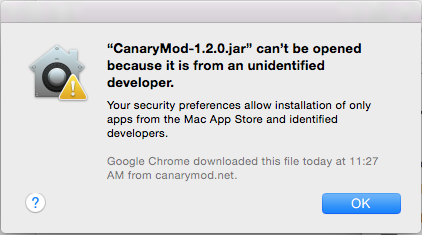

Minecraft Server Explaination
We are here to explain to you on how to make a Minecraft server in a couple of quick and easy steps
Getting started with Minecraft at Flextech High School.
- First thing on how to start your server is to go and get canarymod(you can get it at canarymod.net) Download the link called "CanaryMod(Server)".
- After you have completed that and it has downloaded, find CanaryMod in "Downloads" folder and drag it into your "Documents" folder.
- Once you move CanaryMod into your "documents" folder, double click it. If you are not able to launch it, you will get this dialog:

Press the question mark (?) in the bottom left corner.